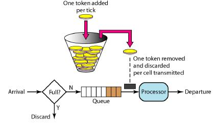

最近看到一些限流的文章，特地整理了一下相关的知识。
在早期的计算机领域，限流技术(time limiting)被用作控制网络接口收发通信数据的速率。 可以用来优化性能，减少延迟和提高带宽等。
现在在互联网领域，也借鉴了这个概念， 用来为服务控制请求的速率， 如果双十一的限流， 12306的抢票等。
即使在细粒度的软件架构中，也有类似的概念。 比如Java线程池可以用Bounded queues保存待执行的任务， 一旦超过queue的容量， 线程池可以根据配置的策略处理此请求。
两种常用算法
令牌桶(Token Bucket)和漏桶(leaky bucket)是
最常用的两种限流的算法。
漏桶算法
它的主要目的是控制数据注入到网络的速率，平滑网络上的突发流量。漏桶算法提供了一种机制，通过它，突发流量可以被整形以便为网络提供一个稳定的流量。
漏桶可以看作是一个带有常量服务时间的单服务器队列，如果漏桶（包缓存）溢出，那么数据包会被丢弃。
用说人话的讲：
漏桶算法思路很简单，水（数据或者请求）先进入到漏桶里，漏桶以一定的速度出水，当水流入速度过大会直接溢出，可以看出漏桶算法能强行限制数据的传输速率。
在某些情况下，漏桶算法不能够有效地使用网络资源。因为漏桶的漏出速率是固定的参数，所以，即使网络中不存在资源冲突（没有发生拥塞），漏桶算法也不能使某一个单独的流突发到端口速率。因此，漏桶算法对于存在突发特性的流量来说缺乏效率。而令牌桶算法则能够满足这些具有突发特性的流量。通常，漏桶算法与令牌桶算法可以结合起来为网络流量提供更大的控制。
令牌桶算法

令牌桶算法的原理是系统会以一个恒定的速度往桶里放入令牌，而如果请求需要被处理，则需要先从桶里获取一个令牌，当桶里没有令牌可取时，则拒绝服务。
令牌桶的另外一个好处是可以方便的改变速度。 一旦需要提高速率，则按需提高放入桶中的令牌的速率。
一般会定时(比如100毫秒)往桶中增加一定数量的令牌， 有些变种算法则实时的计算应该增加的令牌的数量, 比如华为的专利"采用令牌漏桶进行报文限流的方法"(CN 1536815 A),提供了一种动态计算可用令牌数的方法， 相比其它定时增加令牌的方法， 它只在收到一个报文后，计算该报文与前一报文到来的时间间隔内向令牌漏桶内注入的令牌数， 并计算判断桶内的令牌数是否满足传送该报文的要求。
Guava RateLimiter
Google Guava RateLimiter是一个速度控制器，可以根据配置的速度发放许可(令牌)。 每次调用acquire(), 如果有可用的许可，则拿走许可， 否则被阻塞。 拿走的许可毋须被释放。
和JDK中的Semaphore不同， Semaphore控制访问资源的并发数，而RateLimiter控制访问资源的速度。
RateLimter以每秒N个许可的方式按照固定速率分发许可。
你可以warmup让RateLimter能够一开始就稳定的按照固定的速率发放许可。tryAcquire()是一个非阻塞的调用方法。
使用例子：
|
|
参考
网上有众多关于这方面的文章，这里列出了本文参考的一些文档。